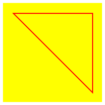

1 The Rational Programmer
31 Aug 2021
Draft
Pragmatics
Mainstream programming language research rests on many “obvious” claims about programming that, upon closer inspection, turn out to be not all that relevant to the “developer on the street.”
Correctness matters. We all know that every non-trivial software system comes with bugs, and neither developers nor their employers care too much about bugs that rarely if ever affect users. Indeed, software systems don’t even have proper specifications, so why should correctness matter.
But, you say, compiler correctness must matter. Does it? How many software projects died because the underlying programming languages didn’t come with formally verified implementations? Developers have worked around compiler bugs for as long as compilers and programming have been around.
Performance matters. Would people really program in Python if performance mattered that much? This is not to say that performance doesn’t matter. It matters as much as correctness. Get lots of “it” right, and developers will be happy.
The performance argument is as old as compilers. And yet, developers have steadily adopted languages at increasingly high levels of expressiveness and deceasing levels of performance. After a long period of Fortran and C programming, developers moved to C++ and then Java. Over the past 20 years, JavaScript and Python have made tremendous gains in mindshare; now it’s TypeScript’s turn and optional typing in general; even Python comes with features that resemble types.
How much of this development is due to programming language research? Some, there is no doubt. Considering the proportion of research effort that goes into certain topics, however, it seems like very little of what programming language research serves up matters, even given the long lag between invention and industrial adoption.
So why do developers switch from one language to the next? Pragmatics.
When a linguist says “pragmatics,” it is a reference to a contextual use of language. Developers understand this idea at an intuitive level. If the context is the early 2000s and the web browser, a programmer can’t use Fortran. If a developer wishes to communicate thoughts about code to other developers, Assembly won’t do. If a biologist-programmer needs a script for analyzing some experiment’s data, he won’t reach for JavaScript. Platforms and libraries, the tool chain and clarity of expression matter most in the real world of software development.
Developers want to balance development speed with delivery quality. The former covers both the creation of software and altering existing software, often just called “maintenance.” Delivery quality comprises many factors: reasonably correct functionality, sufficient speed, affordable cost, and benefits from being “first.”
how can we study the pragmatics of programming languages?
The Rational Programmer
The research question is similar to the one economists faced when they began to
think about the effectiveness of policies—
A century back and some, John Stuart Mills proposed to make up a “model human
being,” homo economicus.Although Homo economicus is
the foundation of classic economics, models resting on it can explain only some
economic phenomena and miss many others. Behavioral economics—
In translation, programming languages needs investigative tools beyond
mathematical modeling and performance evaluation. Here we propose the foundation
of such a tool: the rational programmer. Like homo economicus,
the rational programmer is an idealization—
At a high level, the rational programmer is a computable process that attempts to complete a programming task. It does so by transforming a program either step-by-step or in one go. Specifically, given a utility function U, the goal of a rational programmer RT is to turn a program p that, according to U, has utility below a threshold TH to a program p’ that has utility above TH. Both the utility function U and the rational programmer RT depend on a feature extraction function F. Such a function plays the role of abstracting the information related to the program (and its evaluation) that is available to the RT as it attemptes to complete its task. Putting these pieces together a rational programmer RT can be described as a function RT[U,TH, F](p) where U[F](p) < TH and U[F](RT[U,TH, F](p)) > TH.
Language Design, Rationally
The design of a language (feature) consists of two pieces: syntax and semantics. Hence, if the same syntax comes with two different semantics, a developer may wonder in which manner each semantics supports the various aspects of software development, which is “use in context” and thus pragmatics.
While a programmer edits code, the static semantics—
While a programmer debugs code, the dynamic semantics—
no runtime checking of types
This semantic approach emphasizes the editing benefits of types. As a developer edits code, an IDE can use type information with many tasks, especially name completion and checking for typo-level mistakes.
wrapper-based runtime checking of types
While this approach comes with all the benefits of the first one, it also aims to provide the runtime benefits of types. Specifically, a sound type system prevents runtime conflicts between operations and data. In a context where typed and untyped code fragments co-exist with boundaries between them drawn in arbitrary ways, all kinds of values flow back and forth between those. The question becomes how to realize type soundness.
Static checking is no longer enough, because an untyped piece of code can call a method on an object that originates from a typed piece of code and who knows whether this method exists or whether the arguments conform to the specified types. Hence, the original academic designs of gradual typing come with a semantics that wraps objects as they flow from typed to untyped code and vice versa. These wrappers can then perform runtime checks that correspond to static type checks.
first-order runtime checking of types
Wrapping objects is obviously expensive in terms of both time and space. The question is whether the tests inside of wrappers can somehow be distributed over the code and thus avoid the cost of wrapping. The so-called transient semantics of gradual type systems accomplishes just that and seems to offer similar guarantees.
When typed and untyped code are in conflict—
More generally, the two semantics with runtime checks discover problems at different times and report different information about the failure. The wrapper semantics can pinpoint the exact place where typed and untyped code “agreed” to exchange an object under certain expectations with respect to the failed type tests. The first-order checks do not support such precise reporting of information.
how a semantics serves the developer in the context of debugging a type mismatch.
Which of the semantics helps discover the problem and track down its source?
What information can or should the rational programmer act on?
How can this information be used to find the source of the problem?
The no-runtime-checking semantics defers to the underlying untyped programming language to catch type mismatches. In the simple scenario from above an integer-typed method may stash away the given string in some array and some other method may try to use it later as an int. It is at that point that the underlying machinery signals an error and points the developer to the runtime stack.
In short, the rational programmer must use the runtime stack information to find the actual source of the problem as opposed to its symptom. The astute reader might be wondering now whether the runtime stack is useful in our example or in general.
The semantics using wrapper-based runtime checks realizes a rather different behavior. For plain types, such as int, it checks the argument value as soon as it crosses from untyped code to typed code. So in the example from the previous bullet, the presence of a string is discovered immediately not when some other method retrieves the string from some container.
A starker illustration requires a modified example. Imagine a method md that accepts an object and eventually calls some method on this object. Several things can go wrong now when an untyped code fragment calls md. The supplied object may not have the desired callback method. Even if the method exists, it may take a different number of arguments than expected. It may take the correct number of arguments but expect a different type of argument. The reader can easily imagine other variants of such mismatches.
While the no-runtime-checks semantics can get lost in arbitrary ways for such a higher-order scenarios, the wrapper-based one can catch any form of mistake here. Indeed, wrappers can also enclose information about where the object crossed from one side of the code base to the other, and failing checks can display this information in the error message. The question is whether this information is helpful.
The semantics using first-order checks is directly comparable to the wrapper semantics for simple cases. Checks catch int-String mismatches immediately. For object-based mismatches, however, the semantics may discover a problem eventually and, for some classes of mismatches, it never does. Even if it does, there is much less information available about the source of the problem. There simply is no place to store comparable information about an object as it flows through the program.
This brings us to the second question, namely, whether and how the developer can
exploit this error information during debugging sessions. Since the errors are
about type mismatches between typed pieces of code and untyped pieces, the most
systematic way to eliminate them is to add more type annotations and to
let the type checker discover where the developer makes faulty assumptions about
the addition of types to a piece of code. The error message of each
semantics—
Based on this analysis, we can see that these two questions are algorithmic in nature. That is, we can implement a rational programmer and run it on thousands and tens of thousands scenarios to find out whether the semantics differ effectively during debugging sessions. In other words, we can find answers to the original pragmatics question in an automated manner.
by assuming rationality in a programmer—
using all available information during development activities— it may become possible to computationally simulate activities and to inspect a large number of scenarios automatically.
Teaching Programming, Rationally
Programming languages exist so that people can create useful software systems. Hence, programming language research should inform programming, at both the level of experienced programmers as well as novices. That is, insights into programming language design should provide instructors of programming courses with insights on how to teach the subject.
what does mathematical modeling of programming languages and associated tools tell instructors of programming courses about their work?
what does the construction of compilers and optimizers tell instructors of programming courses about their work?
Design a function that consumes a (representation of a) polygon together with an image and adds the former to the latter. Here is the data definition for Polygons:

Adding SP from figure 13 to
should yield 
; LANGUAGE: htdp/isl (require 2htdp/image) (define BG (rectangle 100 100 'solid 'yellow)) (define SP (list (make-posn 10 10) (make-posn 90 90) (make-posn 90 10))) ; - - - - - - - - - - - - - - - - - - - - - - - - - - - - - - - - - ; {Polygon Image -> Image} (define (add-polygon-to lop background) (local ((define closed-path (add-at-end (first lop) lop)) (define background+ (add-path closed-path background))) background+)) ; A ClosedPath is a Polygon where the first and last ; Posn are identical. ; - - - - - - - - - - - - - - - - - - - - - - - - - - - - - - - - - - ; {ClosedPath Image -> Image} (define (add-path lop background) (cond [(empty? (rest lop)) background] [else (local ((define others (add-path (rest lop) background)) (define link++ (link (first lop) (second lop) background))) link++)])) ; - - - - - - - - - - - - - - - - - - - - - - - - - - - - - - - - - - ; [Posn Posn Image -> Image] (define (link fm to bg) (add-line bg (posn-x fm) (posn-y fm) (posn-x to) (posn-y to) 'red)) ; - - - - - - - - - - - - - - - - - - - - - - - - - - - - - - - - - - ; {X [Listof X] -> [NEListof X]} (define (add-at-end x lox) (cond [(empty? lox) (list x)] [else (cons (first lox) (add-at-end x (rest lox)))]))
The point of the problem in HtDP is to introduce design by composition,
that is, the design of a function that performs its computation by calling other
functions—
; dependencies: ; ; add-polygon-to ; | ; | ; |— -> add-at-end ; | ; | ; |— -> add-path * bug here ; | ; |— -> link
HtDP also demands unit tests for each user-designed function. For function design by composition, the book recommends testing the functions “bottom up,” meaning the one without dependencies gets tested first, then those that depend on the just tested functions, and so on. Figure 14 displays the first few tests, all of which succeed.
(check-expect (add-at-end 'd '[a b c]) '[a b c d]) (check-expect (link (make-posn 10 10) (make-posn 90 90) BG) (add-line BG 10 10 90 90 'red)) (check-expect (add-path (list (make-posn 10 10)) BG) BG)
(check-expect (add-polygon-to SP BG) (let* ((s BG) (s (add-line s 10 10 90 90 'red)) (s (add-line s 90 90 90 10 'red)) (s (add-line s 90 10 10 10 'red))) s))
What is a rational programmer to do?
In this case, maximizing information refers two different ideas: (1) the failing test case and (2) the design of the function itself. The first one is given. The second one is “by composition,” meaning the buggy function calls other functions, each designed systematically. Rationality suggests that the bug is either a part of the function under investigation or one of the functions it calls. Furthermore, rationality tells us that the composition is at fault only if the called functions work properly for the given inputs.
The rational approach is to derive test cases for the called functions from the failing test case of the calling function. Derive means to construct the inputs of the new test case from the inputs of the failing test using the shape of the embedded function call; the rational programmer must also calculate the expected output for these inputs. Once these derived test cases exist, the rational programmer re-runs the test suite to see whether the derived tests work properly.
(check-expect (add-at-end (make-posn 10 10) SP) (list (make-posn 10 10) (make-posn 90 90) (make-posn 90 10) (make-posn 10 10))) (check-expect (local ((define closed-path (add-at-end (make-posn 10 10) SP))) (add-path closed-path background)) (let* ((s BG) (s (add-line s 10 10 90 90 'red)) (s (add-line s 90 90 90 10 'red)) (s (add-line s 90 10 10 10 'red))) s))
Our rational programmer now understands that add-path is buggy too. He hasn’t ruled out yet that there are two errors: one in add-poylgon-to and one in add-path. But he knows that there’s one in the second function or its dependencies.
(define BG+1link (let* ((s BG) (s (add-line s 10 10 90 90 'red))) s)) (check-expect (link (make-posn 10 10) (make-posn 90 90) BG) BG+1link) (define BG+2links (let* ((s BG) (s (add-line s 10 10 90 90 'red)) (s (add-line s 90 90 90 10 'red))) s)) (check-expect (link (make-posn 90 90) (make-posn 90 10) BG+1link) BG+2links) (define BG+tri (let* ((s BG) (s (add-line s 10 10 90 90 'red)) (s (add-line s 90 90 90 10 'red)) (s (add-line s 90 10 10 10 'red))) s)) (check-expect (link (make-posn 90 10) (make-posn 10 10) BG+2links) BG+tri)
The add-path function depends on one user-designed function: link. To rule out a bug in this dependency, the rational programmer once again derives tests for the dependency (link) from the buggy test for add-path: see figure 15. The tests add one side of the triangle, two, and all three, respectively. All of them pass.
At this point, the rational programmer knows that add-path is
guaranteed to have a bug. In other words, the composition of add-path
(recursively) and link does not work properly. Looking closely, the
programmer discovers that link should be called on others not
background—
assuming rationality in a programmer—
using all available information during development activities— can inform the pedagogy of programming. Specifically, systematic design (a la HtDP) naturally yields systematic debugging.
Postscript A “real” programmer would not waste bits on writing three helper functions when all of this functionality can be implemented with a function that uses a single “loop” (or comprehension). Figure 16 displays this variant of add-polygon-to. The variant includes a bug that is analogous to the one above.
How should this “real” programmer tackle the bug search in this context?
; {[Listof Posn] Image -> Image} (define (add-polygon-to lop background) (define poly (append lop (list (first lop)))) (define-values (background+ _) (for/fold ([img background] [from (first poly)]) ([to (rest poly)]) (define x.from (posn-x from)) (define y.from (posn-y from)) (define x.to (posn-x to)) (define y.to (posn-y to)) (define img++ (add-line background x.from y.from x.to y.to 'red)) (values img++ to))) background+)
No, this function isn’t very large. Indeed, to allude to the possibility of a large
function, we named all coordinates explicitly instead of using nested expressions. But
every instructor knows that the standard curriculum introduces loops first, functions
second. Worse, it continues to spread the nonsense that function calls are
expensiveSo why are these people using Python then?, pushing student
towards writing large, unmanageable functions—
Comparing Tooling, Rationally
Software Developers no longer distinguish between a programming language itself and the tool chain it comes with. Of course a language comes with a compiler.Some have only an interpreter. We ignore those here. But, a language must also come with support for a developer’s favorite IDE. It must have a debugger. It must supply a profiler. Indeed, to an individual developer there is often the IDE, the debugger, the profiler, and so on.
In the meantime, language researchers work on enhancing compilers, lifting the level of debugging, and experimenting with alternative ways of profiling code. For compilers, researchers can often show that for some collection of well-known benchmark an enhanced compiler performs better on many programs, but not all. For other tools, however, they face the same problem as language designers: they often cannot validate that developers would be better off with one or the other variant of the same tool.
For a concrete example, consider the task of profiling